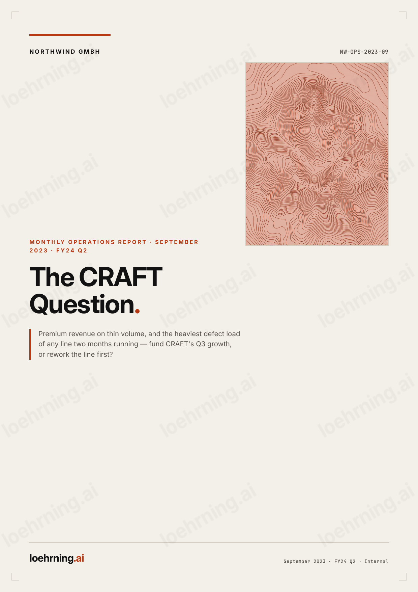
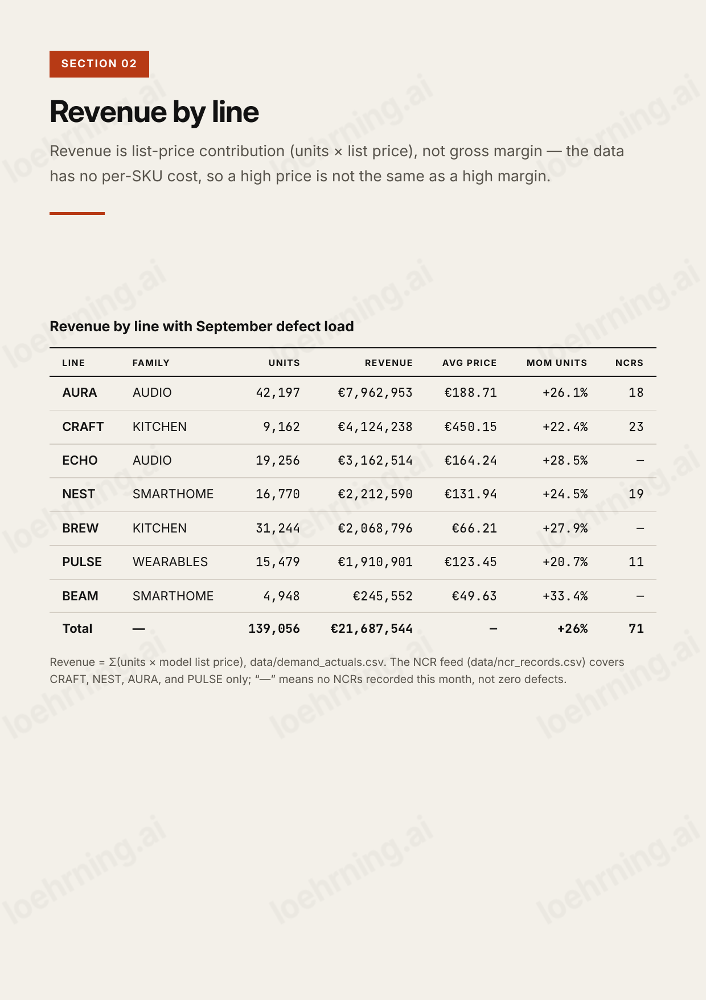
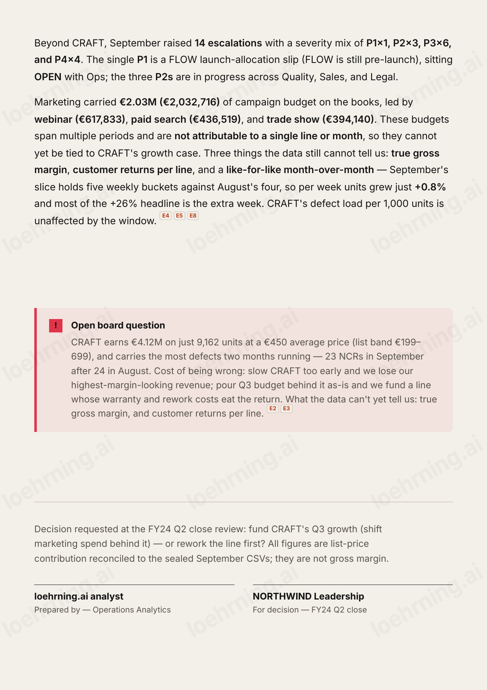

loehrning.ai · Workshop 02
You get a business report every month. Today you teach Claude what your numbers mean, and let it do the reading for you.
90 minutes · Claude desktop app · no code, no API key, nothing to install
Your host
Data Engineer at Meta, Warsaw
I build the data pipelines behind reports like the one we work on today. Before Meta I was a data scientist at Red Bull, and at Apple before that. Everything in this session is what I actually do with Claude when a report lands on my desk.
The setup for the next hour
A family-owned electronics maker in Berlin. About 850 people, roughly €180M a year, eight product lines from speakers to espresso machines. The September numbers just came in, and the leadership meeting wants an answer about one of those lines. You are the analyst they ask.
NORTHWIND is made up. Every number here is safe to share.
Three products: two espresso machines and a grinder. It is NORTHWIND's newest line and its most expensive, launched to move the company upmarket. It sells in small numbers at high prices, and the factory is still working the quality problems out of it. Every other line is older and cheaper.
What we do today
This bar comes back on every prompt slide, with your position marked.
What you download
Double-click to unzip, put it anywhere you like (Desktop is fine), and open that folder in Claude. Everything below is already inside it.
■ the three marked ones are empty on purpose. You fill them during the session.
Prompt 1 of 5
Claude Code is a panel inside the Claude desktop app that can open a folder on your computer. Point it at the unzipped kit and it can read every file in there. START-HERE.md walks you through it. This first prompt has Claude read the company backstory and this month's report, then tell you what it found.
Read data/company-backstory.md and reports/2023-09-monthly-report.md. In two sentences: who is NORTHWIND, and what decision is this month's report building toward?
The material
NORTHWIND's September close. Eight pages: summary, revenue per product line, defects, marketing spend, escalations, and one open decision on the last page. €21.69M across seven lines. Nobody typed these numbers from memory. They were rolled up from raw data files, which is the next slide.
The full report is in the kit, as reports/2023-09-monthly-report.md.
reports/2023-09-monthly-report.md · every page is in this deck

data/ · real rows from the kit
| line | model_code | model_name | base_price_eur |
|---|---|---|---|
| CRAFT | E1 | CRAFT Espresso | 449 |
| CRAFT | E2 | CRAFT Espresso Pro | 699 |
| CRAFT | G1 | CRAFT Grinder | 199 |
plus 20 more rows. CRAFT's whole price list is these 3 models
| week_start | sku | units_actual |
|---|---|---|
| 2023-09-02 | NW-CRAFT-E2-BLK-CH | 164 |
| 2023-09-16 | NW-CRAFT-E1-SLV-GB | 314 |
| 2023-09-30 | NW-CRAFT-G1-SLV-BE | 368 |
plus 2,112 more rows. 95 of them are CRAFT in September: 9,162 units
| ncr_id | ncr_date | line | qty_affected |
|---|---|---|---|
| NCR-000936 | 2023-09-02 | CRAFT | 160 |
| NCR-000035 | 2023-09-23 | CRAFT | 231 |
plus 125 more rows. 23 are CRAFT in September, more than any other line
The material
The report is a summary. Underneath it sit five CSV files in your kit, one row per sale, per defect, per campaign. We show them for one reason: so you know the report can be checked. Add up the 95 CRAFT rows for September and you get the same €4.12M the report prints.
In prompt 3, Claude does that check for you, live.
data/*.csv · open any of them in Excel
The first analyst decision
A monthly report has hundreds of figures in it. Your job is to pick the handful that answer two questions: was this a good month, and what do we do next? For NORTHWIND that is five numbers, plus one flag.
the small E# chips on the report page are its own source references. Every figure names where it came from.
The part that takes judgment
Read CRAFT's €450 average price as profit and you would spend more on it. But it is list price, not profit. Writing these definitions down is the skill you take back to your own company.

The question in the numbers
A reminder of what CRAFT is: the espresso line, three products between €199 and €699, the priciest things NORTHWIND makes. CRAFT is second in revenue at €4.12M but only sixth in units sold. It also has more defects than any other line, two months in a row: 23 in September after 24 in August. (A dash in the defect column means nothing was logged that month, not that there were none.)
Prompt 2 of 5
A Skill is a plain text file of instructions. Claude reads it before it starts work, every single time. Yours ships half written: Claude asks you the missing bits one at a time, you answer in normal words, and it writes your answers into the file. No code anywhere.
Open worksheet.md. Ask me the blanks one at a time, I'll answer in plain English. Then complete the northwind-metrics Skill (.claude/skills/northwind-metrics/SKILL.md) from my answers: fill in the blank metric definitions and reading rules, matching the worked examples (Revenue, Units), plus the CRAFT flag. Show me the finished Skill.
Prompt 3 of 5
This is where the CSV files come back. Your Skill does not take the report's word for it, it checks one figure against the source rows.
Don't use any Skill for this one. With your own eyes, eyeball the report: how did NORTHWIND do this month?
Use my northwind-metrics Skill on reports/2023-09-monthly-report.md: extract this month's numbers into metrics/metrics.json following my reading rules, and verify one number against the source CSV in data/. Show me total revenue and units, revenue and defects by line, and the one line to interrogate.
| Line | Revenue | Units | NCRs |
|---|---|---|---|
| AURA | €7,962,953 | 42,197 | 18 |
| CRAFT | €4,124,238 | 9,162 | 23 |
| ECHO | €3,162,514 | 19,256 | – |
Prompt 4 of 5
Why a dashboard at all? The 8-page report is for you. The meeting gets one page. The page itself is a plain template already sitting in your folder: Claude writes one file of numbers, and the page shows whatever is in that file. The thinking already happened, in your rules.
Build the dashboard from this month's metrics and open it.
Prompt 5 of 5
The VP of Sales wants more Q3 marketing money behind CRAFT. Vote first, hands up. Then send the prompt and see whether your own numbers agree with you.
The VP of Sales wants more Q3 marketing budget behind CRAFT. Using my Skill's reading rules and this month's numbers, make the call: rework CRAFT first, or put more Q3 marketing behind it? Give the number that backs it, the cost of being wrong, and what this data can't tell us. Then argue the opposite as hard as you can.
CRAFT defects: 24 in August, 23 in September. A pattern, not noise. · P1 to P4 on the memo is complaint severity, P1 is the worst.

Optional · once your Skill works
These go past extracting numbers. The first two make Claude check work a human did; the third has it write a small program. All three run in the same folder, with the same Skill, and none of them need code from you.
1. Audit the report. Recompute the whole thing from the raw rows.
Take nothing in reports/2023-09-monthly-report.md on trust. Recompute every figure in it from the CSVs in data/, then show me a table with four columns: the report's number, your number, the file and rows you used, and whether they match. Flag anything that does not.
Claude audits a document against its own source data, and names the file and rows for every line.
2. Break the headline. The one you would have repeated in the meeting.
The report leads with +26% revenue month over month. Before I repeat that number to a board, check whether August and September are even comparable. Recompute the comparison the fairest way you can from data/demand_actuals.csv, show your working, and tell me how much of the +26% survives.
There is a real trap in this data. Nobody in the room spots it by eye. Claude does, and prices it.
3. Ask for a tool, not an answer. One sentence, one working page.
Build me dashboard/whatif.html: a one-page tool with two sliders, CRAFT price change and CRAFT defect rate, that recomputes CRAFT revenue and re-runs my Skill's flag rule live as I drag them. Read the starting numbers from metrics/metrics.json. Plain HTML, CSS and JavaScript in one file, no libraries, and open it when it is done.
You asked a question and got software back. This is the step people do not believe until they see it.
Take these to any report, at any company
The first makes Claude show its sources. The second makes it argue against itself. Use them whenever an answer sounds right but you have not checked it.
1. Where did that come from? Run this one now, on the answer you just got.
For every number in your last answer, show me exactly which file and column it came from. Which did you infer rather than read?
2. Argue the other side. Take this one home and use it on any report.
Argue the opposite recommendation as convincingly as you can. What would have to be true for it to win?
Case 2 · leave the sandbox
NORTHWIND is made up. The method is not. Meta's Q2 2026 results are a public earnings release, so Claude can fetch it live and there is nothing to download. It is also the same shape as CRAFT at a much bigger scale: a strong headline with a question sitting underneath it. The full task is in meta-quarterly/TASK.md in your kit.
Fetch Meta's Q2 2026 earnings press release from https://www.prnewswire.com/news-releases/meta-reports-second-quarter-2026-results-302838214.html and tell me, in three sentences: how did the quarter look on the surface, and what tension sits underneath?
source: Meta's Q2 2026 earnings release, 2026-07-29 · also filed with the SEC as 8-K exhibit 99.1 · public, fetched live
Case 2 · the same two steps as NORTHWIND
For NORTHWIND we gave you a dashboard template to fill. Here there is no template. That is the difference worth seeing: filling a template repeats exactly the same way every month, generating a page is flexible but different every time. Use templates for a monthly routine, generation for a one-off.
M2. Define and extract. Prompts 2 and 3 from this morning, in one step.
Define with me, in plain English, six metrics for reading a Meta quarter: total revenue, revenue by segment (Family of Apps / Reality Labs), operating income and margin, capital expenditures, free cash flow, and daily active people. For each, note one thing it can NOT tell us (watch the one-off charges, and remember this is a quarter, not a month). Then extract this quarter's values with year-over-year change into meta-quarterly/meta-metrics.json, and verify one figure against the release's own financial tables (for example: the two segments must sum to total revenue).
M3. Build the page. No template this time. Claude designs it.
Design and build a one-page dashboard for these figures at meta-quarterly/meta-dashboard.html, flat and print-like, in the same visual spirit as the NORTHWIND one (cream paper, one accent color, ledger tables, no external libraries), and open it. Lead with the one question this quarter puts on the table, and include a "what this data can't tell you" note: no capex split by segment, one-off charges distort the year-over-year, and a quarter has no monthly resolution.
if the fetch comes back blocked, TASK.md has the SEC fallback URL and the User-Agent rule the SEC requires
Take-home · all of these are in PROMPTS.md and meta-quarterly/TASK.md
Next month. Drop the new report into reports/ first.
Here's next month's report in reports/. Re-run my northwind-metrics Skill and rebuild the dashboard, then tell me what changed vs. this month and whether the CRAFT decision still holds.
Live data. Only works on your own Drive. We watch this one, we do not run it.
Connect to my Google Drive, find the latest NORTHWIND monthly report, bring it in, and run my northwind-metrics Skill on it.
Score the forecast. Turn a company's own guidance into a test you can re-run.
From the CFO outlook in this release, extract every forward-looking commitment as a checkable claim: the Q3 revenue range, the full-year expense range, the full-year capex range, the tax-rate range, and the statement about full-year operating income versus last year. For each, write (a) the number or range, (b) what result next quarter would confirm it, and (c) what result would falsify it. Save it as meta-quarterly/forward-test.md, a scorecard I can re-run against the next release.
Strip the one-offs. The sharpest move in the whole workshop.
This quarter's costs include $2.40B of legal charges and $1.18B of severance. Recompute operating income and margin excluding both, and compare that adjusted figure year-over-year. Then tell me which reading is more honest for judging the business, the reported -8% or the adjusted number, and why. Argue the case you did NOT pick as convincingly as you can.
Why this was worth an hour
Your reading of the numbers is written down now, so it does not leave with you. Put next month's file in reports/, run the Skill again, rebuild the dashboard, and Claude tells you what changed and whether the CRAFT decision still holds. You keep both cases, the report, the data, the Skill you wrote, the dashboards and every prompt in this deck. Use meta-quarterly/TASK.md on any public company, and your-company-skill/ on your own numbers.